RG-2 v1.2 · 阶段 B 开发结果
2个独立配对seed × F/P/D/M；8模型，各12000次更新；W96细生成64/256步各32张，合计512张。阶段C尚未启动。
以下为开发诊断。两个训练seed的区间不能替代新seed、新MC链上的确认试验。
| 步数 | 对比 | 平均差 | 逐seed差 | 描述性95%区间 |
|---|
| 64 | M-D | -0.05294 | [0.19885, -0.30472] | [-0.35731, 0.22222] |
| 64 | M-F | -0.05259 | [0.20308, -0.30825] | [-0.36068, 0.25104] |
| 64 | M-P | 0.05682 | [0.08232, 0.03133] | [-0.04139, 0.14053] |
| 256 | M-D | -0.13134 | [-0.04633, -0.21636] | [-0.33896, 0.12981] |
| 256 | M-F | -0.22817 | [-0.16904, -0.28731] | [-0.44019, 0.03444] |
| 256 | M-P | 0.04776 | [0.05848, 0.03705] | [-0.04424, 0.13764] |
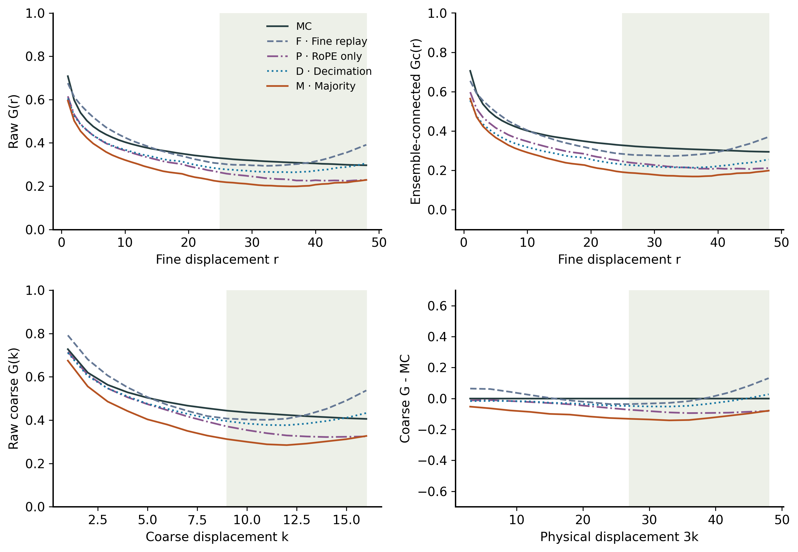
开发 seed 112501, K=64, 每模型32张；MC为8条奇数链各32场。B粗场逐图取真实多数投票。Gc=G−系综平均磁化平方；独立图/独立链的有限样本修正另存 sufficient_statistics。阴影是预定主距离区间；本图不作确认性判断。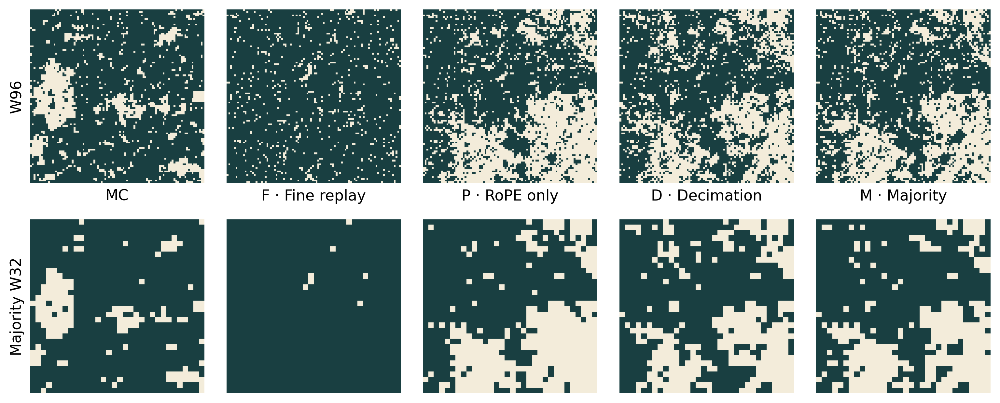
预登记生成ID=0，开发 seed=112501，K=64；MC parent=128、global origin=(464,464)。下行均为正上方细图的3×3多数投票。MC为独立参考构型；同一seed的模型列复用配对U/V随机数，列间不计算像素误差。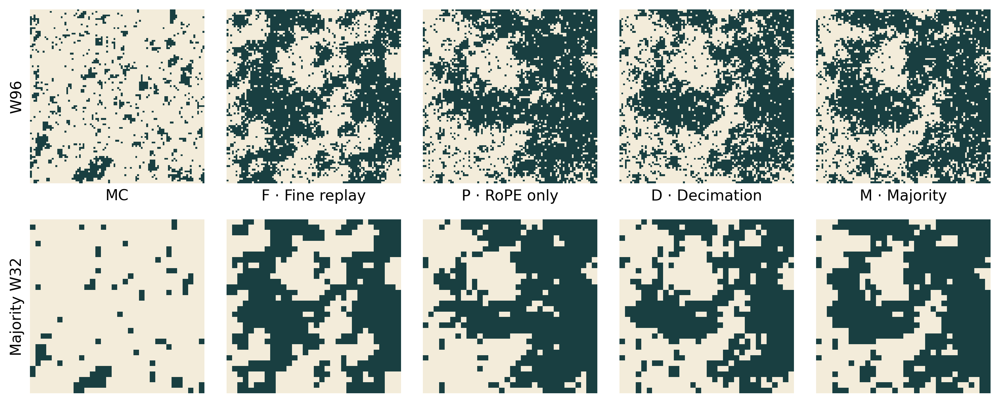
预登记生成ID=1，开发 seed=112501，K=64；MC parent=129、global origin=(464,464)。下行均为正上方细图的3×3多数投票。MC为独立参考构型；同一seed的模型列复用配对U/V随机数，列间不计算像素误差。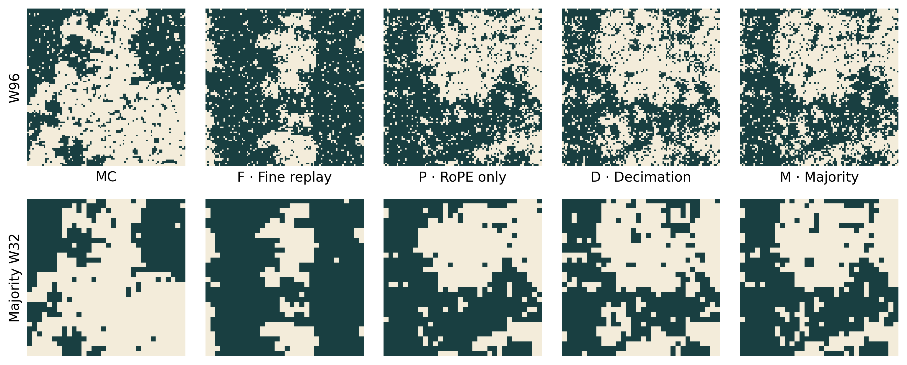
预登记生成ID=2，开发 seed=112501，K=64；MC parent=130、global origin=(464,464)。下行均为正上方细图的3×3多数投票。MC为独立参考构型；同一seed的模型列复用配对U/V随机数，列间不计算像素误差。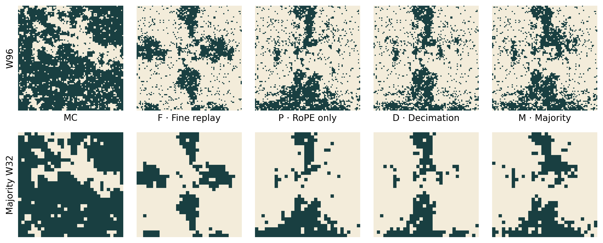
预登记生成ID=3，开发 seed=112501，K=64；MC parent=131、global origin=(464,464)。下行均为正上方细图的3×3多数投票。MC为独立参考构型；同一seed的模型列复用配对U/V随机数，列间不计算像素误差。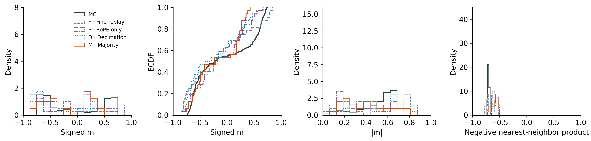
开发 seed 112501, K=64, fine W96。保留生成磁化原符号，所有seed使用相同分箱与全幅坐标。每键能量口径为窗口内邻键乘积负均值；粗格为操作性统计。小样本优先读ECDF。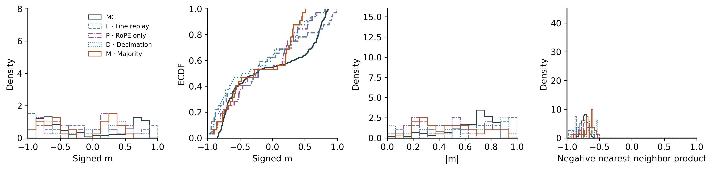
开发 seed 112501, K=64, B W32。保留生成磁化原符号，所有seed使用相同分箱与全幅坐标。每键能量口径为窗口内邻键乘积负均值；粗格为操作性统计。小样本优先读ECDF。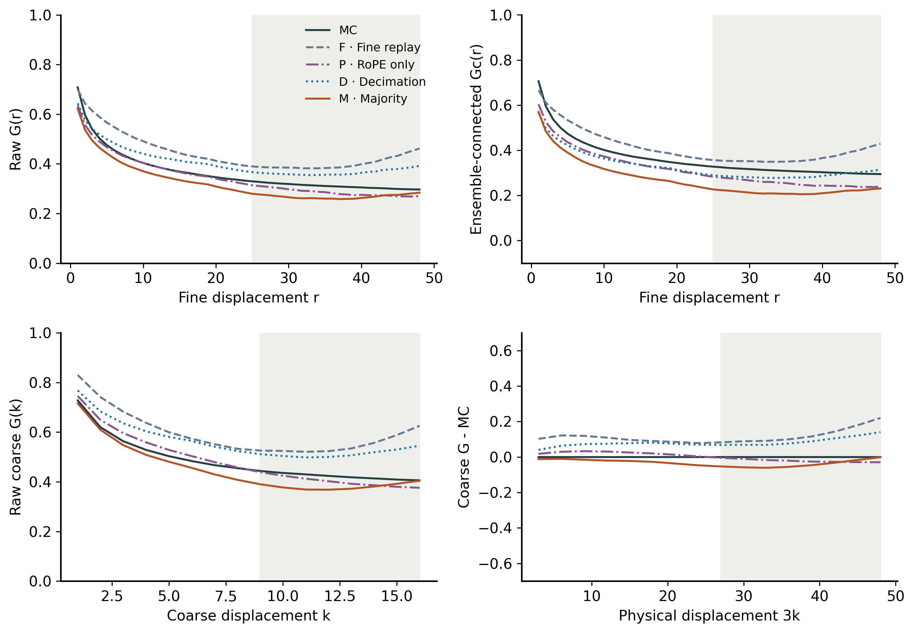
开发 seed 112501, K=256, 每模型32张；MC为8条奇数链各32场。B粗场逐图取真实多数投票。Gc=G−系综平均磁化平方；独立图/独立链的有限样本修正另存 sufficient_statistics。阴影是预定主距离区间；本图不作确认性判断。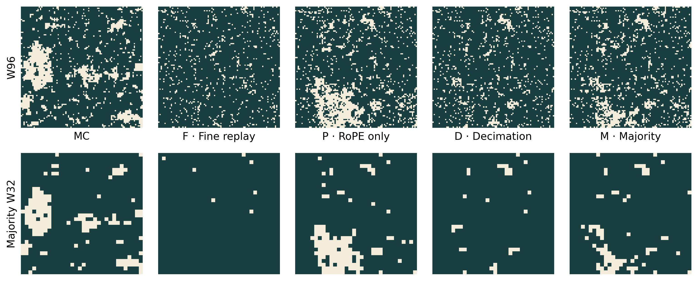
预登记生成ID=0，开发 seed=112501，K=256；MC parent=128、global origin=(464,464)。下行均为正上方细图的3×3多数投票。MC为独立参考构型；同一seed的模型列复用配对U/V随机数，列间不计算像素误差。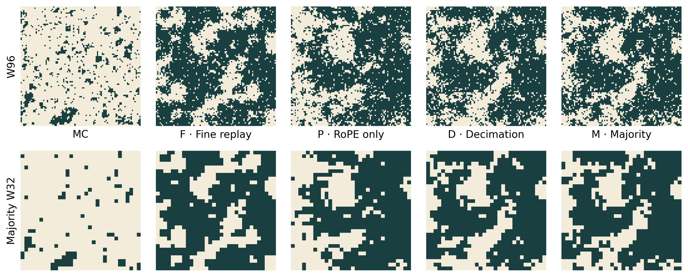
预登记生成ID=1，开发 seed=112501，K=256；MC parent=129、global origin=(464,464)。下行均为正上方细图的3×3多数投票。MC为独立参考构型；同一seed的模型列复用配对U/V随机数，列间不计算像素误差。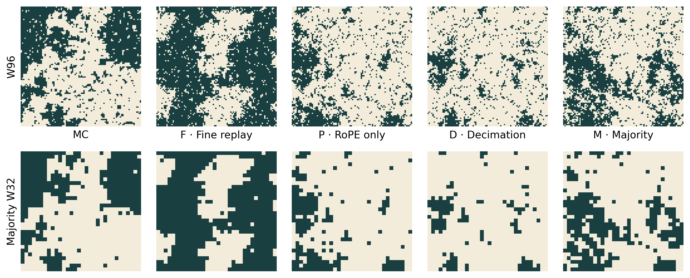
预登记生成ID=2，开发 seed=112501，K=256；MC parent=130、global origin=(464,464)。下行均为正上方细图的3×3多数投票。MC为独立参考构型；同一seed的模型列复用配对U/V随机数，列间不计算像素误差。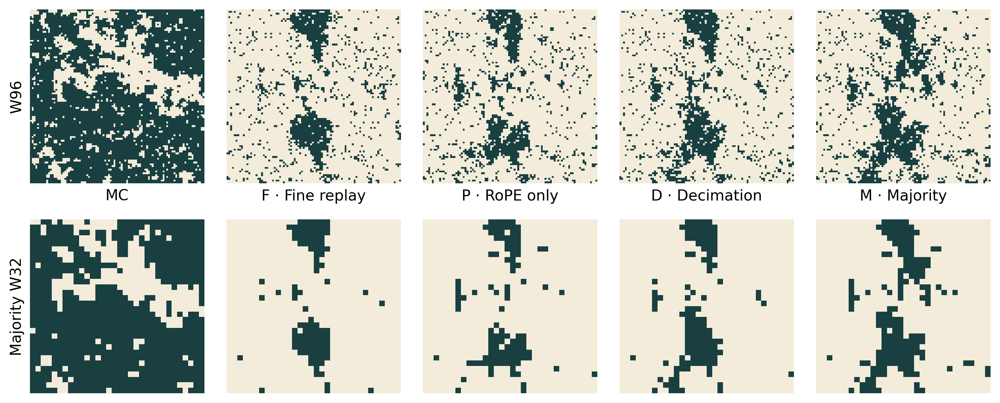
预登记生成ID=3，开发 seed=112501，K=256；MC parent=131、global origin=(464,464)。下行均为正上方细图的3×3多数投票。MC为独立参考构型；同一seed的模型列复用配对U/V随机数，列间不计算像素误差。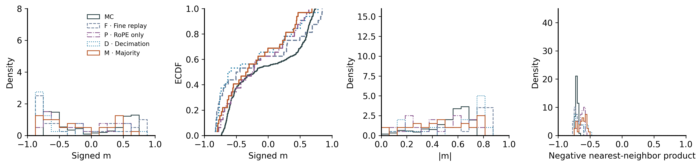
开发 seed 112501, K=256, fine W96。保留生成磁化原符号，所有seed使用相同分箱与全幅坐标。每键能量口径为窗口内邻键乘积负均值；粗格为操作性统计。小样本优先读ECDF。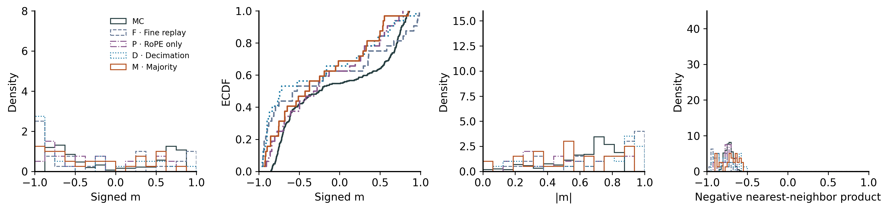
开发 seed 112501, K=256, B W32。保留生成磁化原符号，所有seed使用相同分箱与全幅坐标。每键能量口径为窗口内邻键乘积负均值；粗格为操作性统计。小样本优先读ECDF。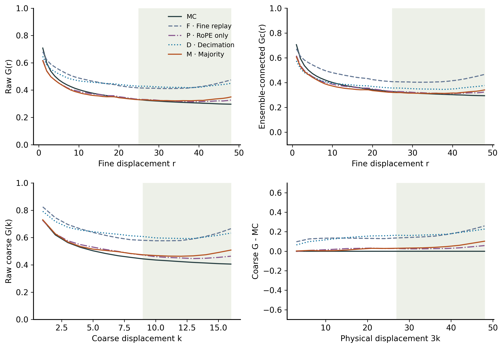
开发 seed 112502, K=64, 每模型32张；MC为8条奇数链各32场。B粗场逐图取真实多数投票。Gc=G−系综平均磁化平方；独立图/独立链的有限样本修正另存 sufficient_statistics。阴影是预定主距离区间；本图不作确认性判断。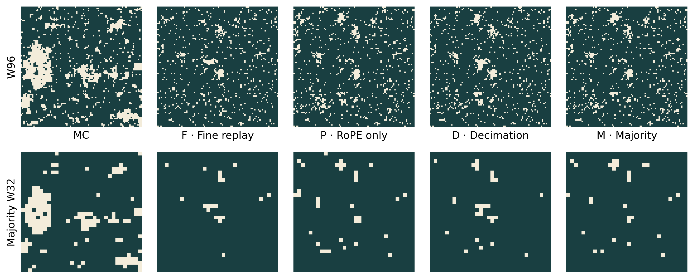
预登记生成ID=0，开发 seed=112502，K=64；MC parent=128、global origin=(464,464)。下行均为正上方细图的3×3多数投票。MC为独立参考构型；同一seed的模型列复用配对U/V随机数，列间不计算像素误差。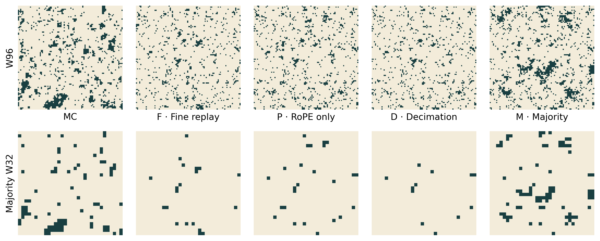
预登记生成ID=1，开发 seed=112502，K=64；MC parent=129、global origin=(464,464)。下行均为正上方细图的3×3多数投票。MC为独立参考构型；同一seed的模型列复用配对U/V随机数，列间不计算像素误差。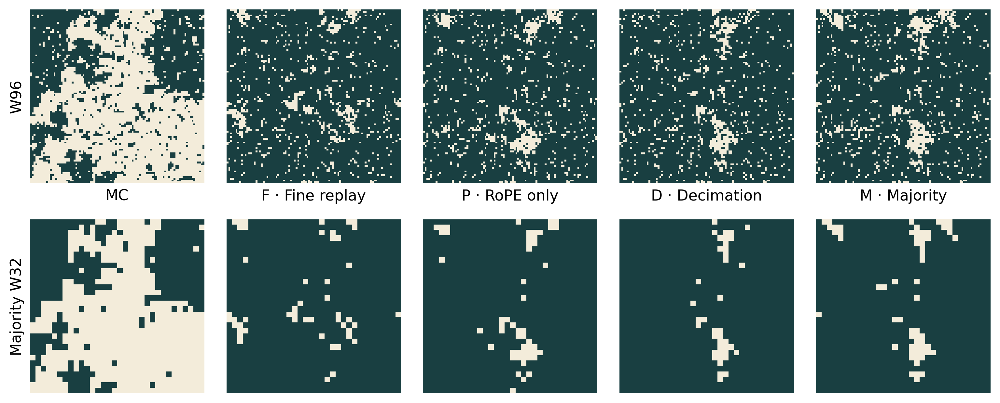
预登记生成ID=2，开发 seed=112502，K=64；MC parent=130、global origin=(464,464)。下行均为正上方细图的3×3多数投票。MC为独立参考构型；同一seed的模型列复用配对U/V随机数，列间不计算像素误差。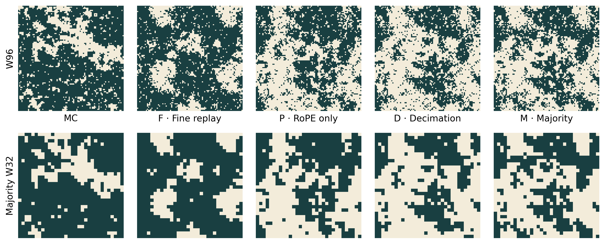
预登记生成ID=3，开发 seed=112502，K=64；MC parent=131、global origin=(464,464)。下行均为正上方细图的3×3多数投票。MC为独立参考构型；同一seed的模型列复用配对U/V随机数，列间不计算像素误差。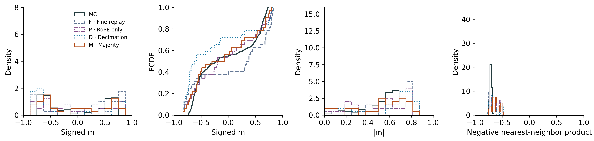
开发 seed 112502, K=64, fine W96。保留生成磁化原符号，所有seed使用相同分箱与全幅坐标。每键能量口径为窗口内邻键乘积负均值；粗格为操作性统计。小样本优先读ECDF。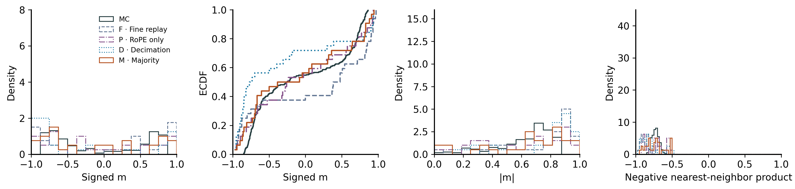
开发 seed 112502, K=64, B W32。保留生成磁化原符号，所有seed使用相同分箱与全幅坐标。每键能量口径为窗口内邻键乘积负均值；粗格为操作性统计。小样本优先读ECDF。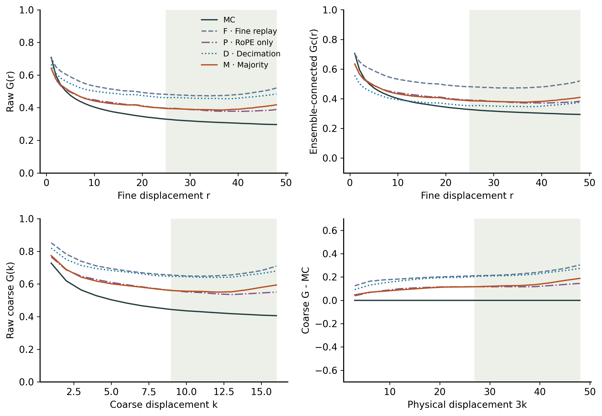
开发 seed 112502, K=256, 每模型32张；MC为8条奇数链各32场。B粗场逐图取真实多数投票。Gc=G−系综平均磁化平方；独立图/独立链的有限样本修正另存 sufficient_statistics。阴影是预定主距离区间；本图不作确认性判断。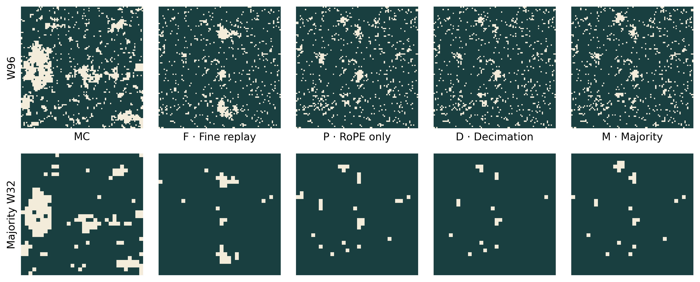
预登记生成ID=0，开发 seed=112502，K=256；MC parent=128、global origin=(464,464)。下行均为正上方细图的3×3多数投票。MC为独立参考构型；同一seed的模型列复用配对U/V随机数，列间不计算像素误差。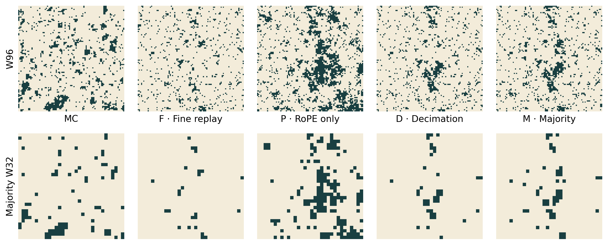
预登记生成ID=1，开发 seed=112502，K=256；MC parent=129、global origin=(464,464)。下行均为正上方细图的3×3多数投票。MC为独立参考构型；同一seed的模型列复用配对U/V随机数，列间不计算像素误差。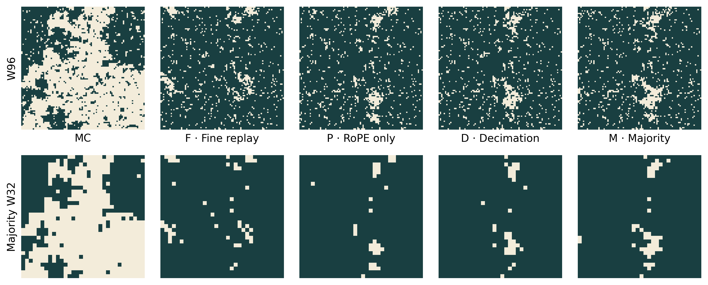
预登记生成ID=2，开发 seed=112502，K=256；MC parent=130、global origin=(464,464)。下行均为正上方细图的3×3多数投票。MC为独立参考构型；同一seed的模型列复用配对U/V随机数，列间不计算像素误差。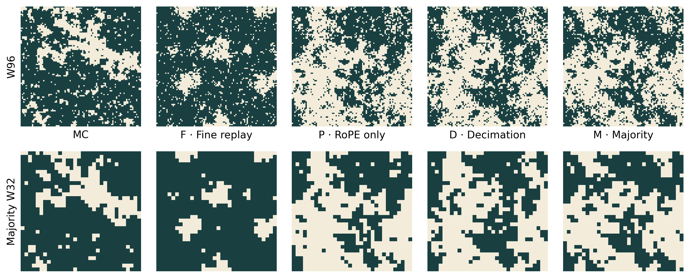
预登记生成ID=3，开发 seed=112502，K=256；MC parent=131、global origin=(464,464)。下行均为正上方细图的3×3多数投票。MC为独立参考构型；同一seed的模型列复用配对U/V随机数，列间不计算像素误差。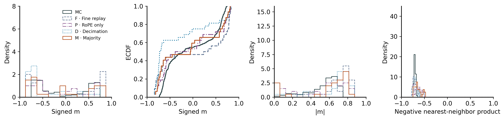
开发 seed 112502, K=256, fine W96。保留生成磁化原符号，所有seed使用相同分箱与全幅坐标。每键能量口径为窗口内邻键乘积负均值；粗格为操作性统计。小样本优先读ECDF。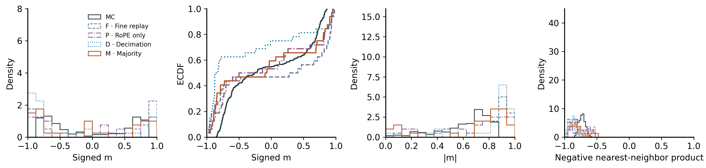
开发 seed 112502, K=256, B W32。保留生成磁化原符号，所有seed使用相同分箱与全幅坐标。每键能量口径为窗口内邻键乘积负均值；粗格为操作性统计。小样本优先读ECDF。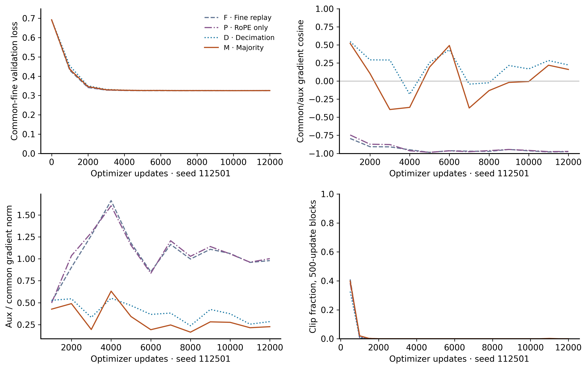
开发seed=112501，四臂各12000次更新。验证使用EMA，输入固定且来自独立验证链；损失为方案规定的inverse-t、按全部token归一的masked CE。梯度在同一raw参数状态下分别反传，排除任务嵌入；范数与实际裁剪率按原始梯度记录。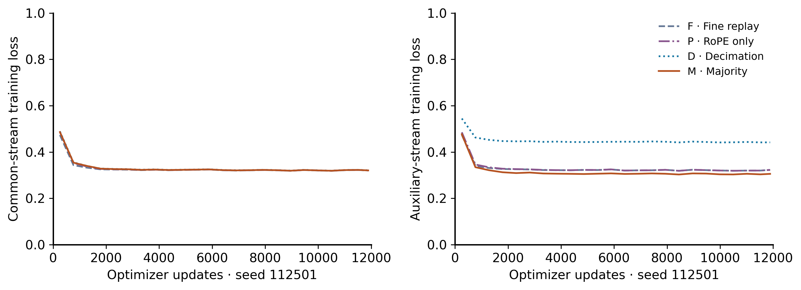
开发seed=112501。每条流按互不重叠的256次流内更新取均值，末块保留剩余更新；横轴为实际优化器更新。辅助流的目标数据随实验臂不同，其损失用于学习状态诊断，跨臂同任务优劣由共同流验证与独立生成评价判断。原始逐次数据及这些均值均保存。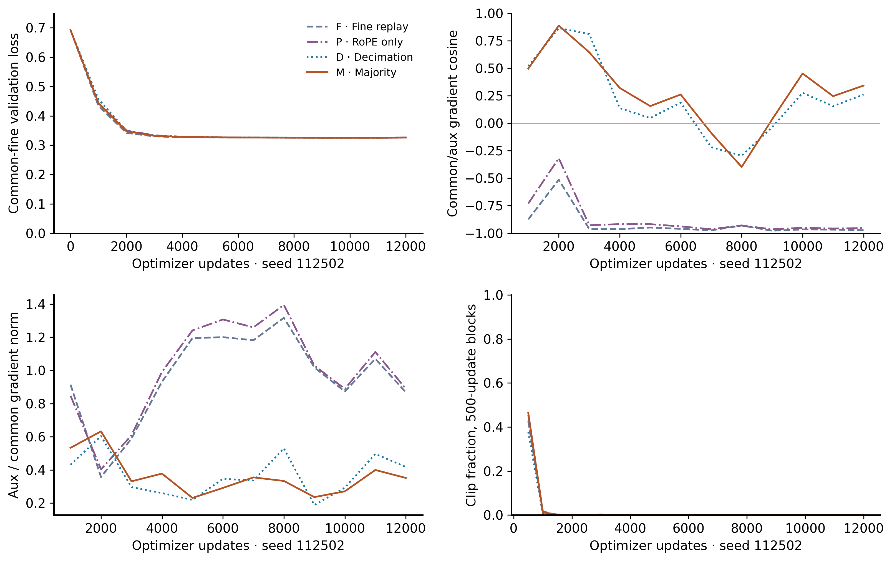
开发seed=112502，四臂各12000次更新。验证使用EMA，输入固定且来自独立验证链；损失为方案规定的inverse-t、按全部token归一的masked CE。梯度在同一raw参数状态下分别反传，排除任务嵌入；范数与实际裁剪率按原始梯度记录。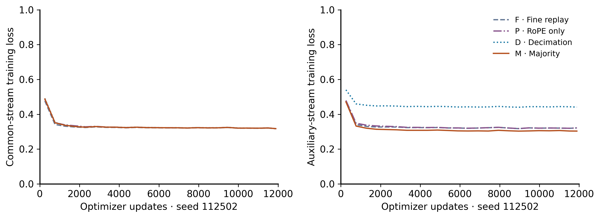
开发seed=112502。每条流按互不重叠的256次流内更新取均值，末块保留剩余更新；横轴为实际优化器更新。辅助流的目标数据随实验臂不同，其损失用于学习状态诊断，跨臂同任务优劣由共同流验证与独立生成评价判断。原始逐次数据及这些均值均保存。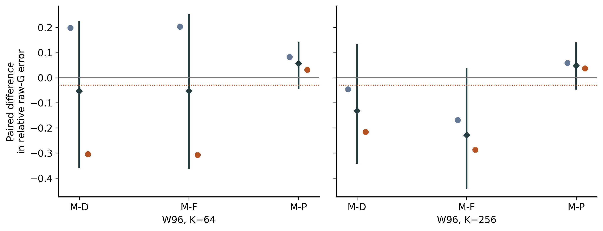
灰蓝点为开发seed 112501，赭橙点为112502，黑菱形为等权平均。竖线是10000次联合seed→配对生成图及独立MC链/块重抽样的描述性95%分位区间；两seed的区间不作确认性解释。虚线−0.03仅是原方案候选阈值，尚未据此开展C。